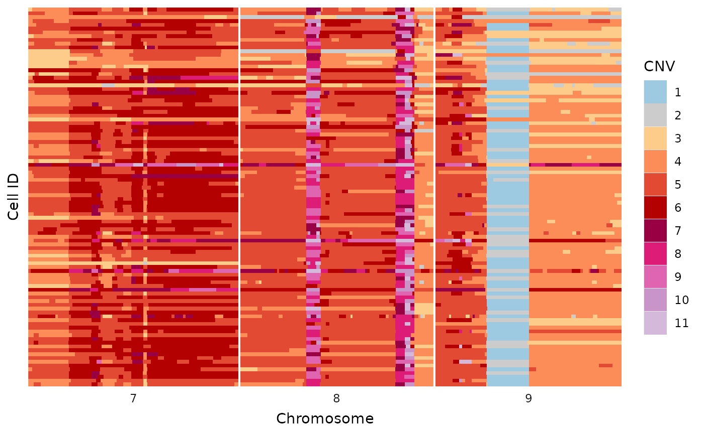

Functions in this package
useful_functions.RmdUseful functions in dlptools
Masking Bad Regions
Masking regions that are bad for DLP, mostly the consequence of low mappability.
# assuming some sort of reads or segments DF with: chr, start, end
ex_reads <- vroom::vroom("data/example_reads.tsv.gz")
ex_reads <- dlptools::mark_mask_regions(ex_reads)
# adds a boolean `mask` column
ex_reads |>
dplyr::select(, cell_id, chr, start, end, mask) |>
dplyr::slice_head(n = 5)
#> # A tibble: 5 × 5
#> cell_id chr start end mask
#> <chr> <chr> <dbl> <dbl> <lgl>
#> 1 AT23998-A138956A-R03-C34 1 1 500000 FALSE
#> 2 AT23998-A138956A-R03-C34 1 500001 1000000 FALSE
#> 3 AT23998-A138956A-R03-C34 1 1000001 1500000 FALSE
#> 4 AT23998-A138956A-R03-C34 1 1500001 2000000 FALSE
#> 5 AT23998-A138956A-R03-C34 1 2000001 2500000 FALSEThe default masking file is one constructed by Daniel Lai, and can be viewed at the package source or by loading:
vroom::vroom(system.file("extdata", "blacklist_2023.07.17.txt", package = "dlptools"))
#> # A tibble: 26 × 4
#> seqnames start end width
#> <chr> <dbl> <dbl> <dbl>
#> 1 1 120500001 148000000 27500000
#> 2 2 87000001 95500000 8500000
#> 3 3 90500001 93500000 3000000
#> 4 4 49000001 53000000 4000000
#> 5 5 46000001 49500000 3500000
#> 6 6 57000001 62500000 5500000
#> 7 7 55500001 66000000 10500000
#> 8 8 43500001 48000000 4500000
#> 9 9 38500001 71000000 32500000
#> 10 10 38500001 52000000 13500000
#> # ℹ 16 more rowsInformation From Cell IDs
This is assuming our standard DLP cell ids, e.g.,
AT23998-A138956A-R03-C34.
# single cell id
dlptools::sample_from_cell("AT23998-A138956A-R03-C34")
#> [1] "AT23998"
# single library ID
dlptools::library_from_cell("AT23998-A138956A-R03-C34")
#> [1] "A138956A"
# Also a generic function for either
# dlptools::pull_info_from_cell_id("AT23998-A138956A-R03-C34", sample_id = TRUE)
# dlptools::pull_info_from_cell_id("AT23998-A138956A-R03-C34", library_id = TRUE)
# multiple cell ids:
dlptools::sample_from_cell(ex_reads$cell_id[1:5])
#> [1] "AT23998" "AT23998" "AT23998" "AT23998" "AT23998"
# or library
dlptools::library_from_cell(ex_reads$cell_id[1:5])
#> [1] "A138956A" "A138956A" "A138956A" "A138956A" "A138956A"
# more useful it using it on your reads data frame
# extracting sample id and library id and inserting into the dataframe
ex_reads <- ex_reads |>
dplyr::mutate(
sample_id = dlptools::sample_from_cell(cell_id),
library_id = dlptools::library_from_cell(cell_id)
)
ex_reads |>
dplyr::distinct(cell_id, sample_id, library_id) |>
dplyr::slice_sample(n = 5)
#> # A tibble: 5 × 3
#> cell_id sample_id library_id
#> <chr> <chr> <chr>
#> 1 AT23998-A138956A-R17-C13 AT23998 A138956A
#> 2 AT23998-A138956A-R10-C33 AT23998 A138956A
#> 3 AT28335-A143820B-R51-C21 AT28335 A143820B
#> 4 AT23998-A138956A-R23-C28 AT23998 A138956A
#> 5 AT23998-A138956A-R17-C51 AT23998 A138956AReads to Segments
Grouping read bins into contiguous segments (e.g. post filtering read bins, etc.).
segs_filt <- dlptools::reads_to_segs(ex_reads)
# this is now runs of adjacent read bins with identical states collapesed
# into a single bin. Of course, bins are no longer of equal size.
segs_filt[1:4, ]
#> # A tibble: 4 × 5
#> # Groups: cell_id, chr [1]
#> cell_id chr start end state
#> <chr> <chr> <dbl> <dbl> <dbl>
#> 1 AT23998-A138956A-R03-C34 1 1 41000000 4
#> 2 AT23998-A138956A-R03-C34 1 41000001 49500000 5
#> 3 AT23998-A138956A-R03-C34 1 49500001 55000000 7
#> 4 AT23998-A138956A-R03-C34 1 55000001 58500000 5warning: this function will leave some unexpected gaps when dataframes have been filtered and bins removed. Inspect carfully if you have dropped bins from your dataframe.
Long to Wide Reads (or segments)
Some functions require read state information to be in wide format vs long, with cell_ids as rows and chr_start_end as columns, and the states as cells.
ex_reads_w <- dlptools::convert_long_reads_to_wide(ex_reads)
ex_reads_w[1:4, 1:4]
#> # A tibble: 4 × 4
#> cell_id `1_1_500000` `1_500001_1000000` `1_1000001_1500000`
#> <chr> <dbl> <dbl> <dbl>
#> 1 AT23998-A138956A-R03-C34 4 4 4
#> 2 AT23998-A138956A-R04-C58 4 4 4
#> 3 AT23998-A138956A-R05-C42 5 5 5
#> 4 AT23998-A138956A-R05-C64 4 4 4Basic Plots
This plot is a simplified alternative to the methods described in the heatmaps vignette. There are no additions, like trees and annotations, but works for a variety of quick inspections.
dlptools::basic_tile_plot(
# just filtering to make the plot smaller for this demonstration
dplyr::filter(ex_reads, chr %in% c(7:9))
)
To help with plotting, a variety of commonly use color palettes are available:
# standard state colors
dlptools::CNV_COLOURS
#> 0 1 2 3 4 5 6 7
#> "#3182BD" "#9ECAE1" "#CCCCCC" "#FDCC8A" "#FC8D59" "#E34A33" "#B30000" "#980043"
#> 8 9 10 11+ 11
#> "#DD1C77" "#DF65B0" "#C994C7" "#D4B9DA" "#D4B9DA"
# typically used allele specific colors
dlptools::ASCN_COLORS
#> 0|0 1|0 1|1 2|0 2|1 3|0 2|2 3|1
#> "#3182BD" "#9ECAE1" "#CCCCCC" "#666666" "#FDCC8A" "#FEE2BC" "#FC8D59" "#FDC1A4"
#> 4|0 5 6 7 8 9 10 11
#> "#FB590E" "#E34A33" "#B30000" "#980043" "#DD1C77" "#DF65B0" "#C994C7" "#D4B9DA"
#> 11+
#> "#D4B9DA"
# typically used phase colors
dlptools::ASCN_PHASE_COLORS
#> A-Hom B-Hom A-Gained B-Gained Balanced
#> "#56941E" "#471871" "#94C773" "#7B52AE" "#d5d5d4"
# typically BAF scale is a circlize::colorRamp2 spanning
# standard green-grey-purple used for ASCN colors
# dlptools::BAF_COLORSData Importing
If you’ve followed a semi-standard approach for downloading such as this:
# bash
cd where/to/save/my_dlp/
ticket="SC-8382"
azcopy copy https://singlecellresults.blob.core.windows.net/results/${ticket}/results/annotation/ ${ticket} --recursive
azcopy copy https://singlecellresults.blob.core.windows.net/results/${ticket}/results/hmmcopy/ ${ticket} --recursivewhich produces a directory with this sort of structure:
├── SC-8382
│ ├── annotation
│ │ ├── metrics.csv.gz
│ │ ├── #[...other files ...]
│ └── hmmcopy
│ │ ├── #[...other files ...]
│ ├── reads.csv.gz
│ ├── segments.csv.gz
├── SC-8408
│ ├── annotation
│ │ ├── metrics.csv.gz
│ │ ├── #[...other files ...]
│ └── hmmcopy
│ │ ├── #[...other files ...]
│ ├── reads.csv.gz
│ ├── segments.csv.gz
├── SC-8650then there are some functions that can help with loading data from these into a consistent dataframe:
dlp_dir <- "/where/to/save/my_dlp/"
# loading metrics
metrics <- dlptools::import_dlp_files(dlp_dir, "metrics")
# loading reads
reads_df <- dlptools::import_dlp_files(dlp_dir, "reads")
# loading segments...but generally this isn't a great idea
# segs_df <- dlptools::import_dlp_files(dlp_dir, "segments")Other
Phylogenetic trees made by Stika take some formatting before they can be plotted:
dlptools::format_sitka_tree()this function drops locus tips and removes the
cell_ part of cell id names on tips. This way, the trees
can be aligned to cell ids in the heatmaps.